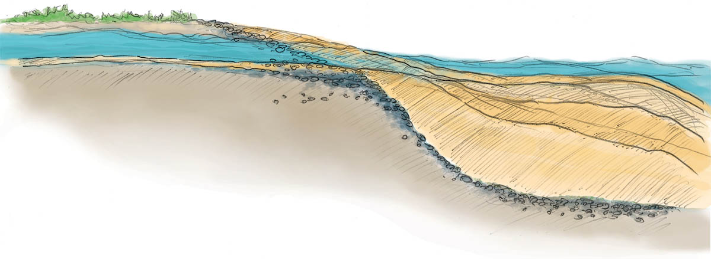

<div class="fixed-placeholder mouth-cutaway">
  <div class="aspect-inner">
    <div class="mouth-fade" sticky="section.mouth.river-zone" scroll-class="activate" scroll-trigger=".mouth .after-deluge">
      
      
    </div>
  </div>
</div>

<div class="before-deluge constrained">

  <p><%= text.mouth_before %>

  <aside class="point-of-interest">
    <h4><%= headers.vegetation %></h4>
    <p><%= text.vegetation %></p>
  </aside>


  <aside class="point-of-interest">
    <h4><%= headers.hermit_crabs %></h4>
    <%= t.include("_wash.html", { url: "animals/HermitCrab$_800x558.jpg" }) %>
    <p><%= text.hermit_crabs %></p>
  </aside>

  <aside class="point-of-interest">
    <h4><%= headers.starfish %></h4>
    <%= t.include("_wash.html", { url: "animals/SeaStar$_800x687.jpg" }) %>
    <p><%= text.starfish %></p>
  </aside>

  <aside class="point-of-interest">
    <h4><%= headers.urchins %></h4>
    <%= t.include("_wash.html", { url: "animals/SeaUrchin$_800x745.jpg" }) %>
    <p><%= text.urchins %></p>
  </aside>

</div>

<div class="after-deluge constrained">
  
  <p>
    <%= text.mouth_after %>

  <aside class="point-of-interest">
    <h4><%= headers.forage_fish %></h4>
    <p><%= text.forage_fish %></p>
  </aside>

  <aside class="point-of-interest">
    <h4><%= headers.dungeness %></h4>
    <%= t.include("_wash.html", { url: "animals/DungenessCrab$_800x412.jpg" }) %>
    <p><%= text.dungeness %></p>
  </aside>

  <aside class="point-of-interest">
    <h4><%= headers.shrimp %></h4>
    <%= t.include("_wash.html", { url: "animals/Shrimp$_800x606.jpg" }) %>
    <p><%= text.shrimp %></p>
  </aside>

</div>